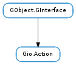

| Subclasses: | Gio.SimpleAction, Mx.Action |
|---|
| activate(parameter) | |
| change_state(value) | |
| get_enabled() | |
| get_name() | |
| get_parameter_type() | |
| get_state() | |
| get_state_hint() | |
| get_state_type() |
| Name | Type | Flags | Description |
|---|---|---|---|
| enabled | bool | r | If the action can be activated |
| name | str | r | The name used to invoke the action |
| parameter-type | GLib.VariantType | r | The type of GLib.Variant passed to activate() |
| state | GLib.Variant | r | The state the action is in |
| state-type | GLib.VariantType | r | The type of the state kept by the action |
None
Bases: GObject.GInterface
Gio.Action represents a single named action.
The main interface to an action is that it can be activated with Gio.Action.activate (). This results in the ‘activate’ signal being emitted. An activation has a GLib.Variant parameter (which may be None ). The correct type for the parameter is determined by a static parameter type (which is given at construction time).
An action may optionally have a state, in which case the state may be set with Gio.Action.change_state (). This call takes a GLib.Variant. The correct type for the state is determined by a static state type (which is given at construction time).
The state may have a hint associated with it, specifying its valid range.
Gio.Action is merely the interface to the concept of an action, as described above. Various implementations of actions exist, including Gio.SimpleAction and #GtkAction.
In all cases, the implementing class is responsible for storing the name of the action, the parameter type, the enabled state, the optional state type and the state and emitting the appropriate signals when these change. The implementor responsible for filtering calls to Gio.Action.activate () and Gio.Action.change_state () for type safety and for the state being enabled.
Probably the only useful thing to do with a Gio.Action is to put it inside of a Gio.SimpleActionGroup.
| Parameters: | parameter (GLib.Variant or None) – the parameter to the activation |
|---|
Activates the action.
parameter must be the correct type of parameter for the action (ie: the parameter type given at construction time). If the parameter type was None then parameter must also be None.
| Parameters: | value (GLib.Variant) – the new state |
|---|
Request for the state of action to be changed to value.
The action must be stateful and value must be of the correct type. See Gio.Action.get_state_type ().
This call merely requests a change. The action may refuse to change its state or may change its state to something other than value. See Gio.Action.get_state_hint ().
If the value GLib.Variant is floating, it is consumed.
| Returns: | whether the action is enabled |
|---|---|
| Return type: | bool |
Checks if action is currently enabled.
An action must be enabled in order to be activated or in order to have its state changed from outside callers.
| Returns: | the parameter type |
|---|---|
| Return type: | GLib.VariantType |
Queries the type of the parameter that must be given when activating action.
When activating the action using Gio.Action.activate (), the GLib.Variant given to that function must be of the type returned by this function.
In the case that this function returns None, you must not give any GLib.Variant, but None instead.
| Returns: | the current state of the action |
|---|---|
| Return type: | GLib.Variant |
Queries the current state of action.
If the action is not stateful then None will be returned. If the action is stateful then the type of the return value is the type given by Gio.Action.get_state_type ().
The return value (if non-None ) should be freed with GLib.Variant.unref () when it is no longer required.
| Returns: | the state range hint |
|---|---|
| Return type: | GLib.Variant |
Requests a hint about the valid range of values for the state of action.
If None is returned it either means that the action is not stateful or that there is no hint about the valid range of values for the state of the action.
If a GLib.Variant array is returned then each item in the array is a possible value for the state. If a GLib.Variant pair (ie: two-tuple) is returned then the tuple specifies the inclusive lower and upper bound of valid values for the state.
In any case, the information is merely a hint. It may be possible to have a state value outside of the hinted range and setting a value within the range may fail.
The return value (if non-None ) should be freed with GLib.Variant.unref () when it is no longer required.
| Returns: | the state type, if the action is stateful |
|---|---|
| Return type: | GLib.VariantType |
Queries the type of the state of action.
If the action is stateful (e.g. created with Gio.SimpleAction.new_stateful ()) then this function returns the GLib.VariantType of the state. This is the type of the initial value given as the state. All calls to Gio.Action.change_state () must give a GLib.Variant of this type and Gio.Action.get_state () will return a GLib.Variant of the same type.
If the action is not stateful (e.g. created with Gio.SimpleAction.new ()) then this function will return None. In that case, Gio.Action.get_state () will return None and you must not call Gio.Action.change_state ().